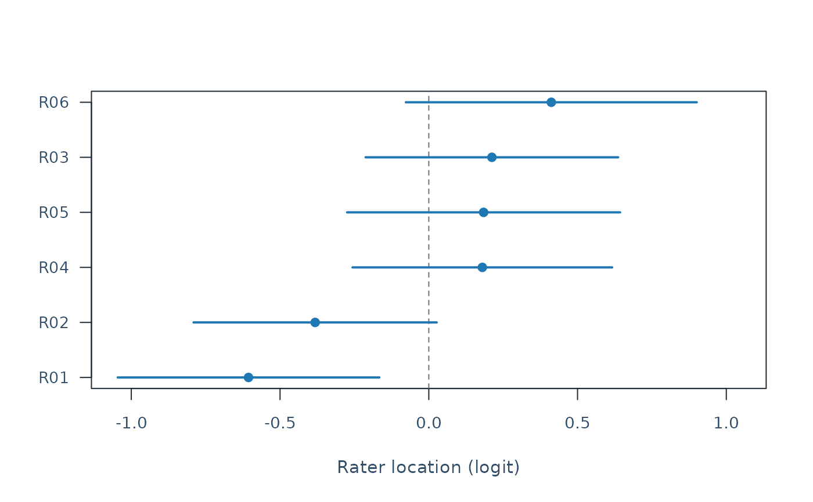

Plot facet locations with qualified normal uncertainty bands
Source:R/api-plotting-extras.R
plot_rater_severity_profile.RdRanks the levels of a chosen facet by fitted location and
draws available normal uncertainty bounds around each point
estimate. Optional descriptive bands mark absolute distances of 0.5
and 1.0 logit from zero; they are display aids, not calibration rules.
Usage
plot_rater_severity_profile(
fit,
diagnostics = NULL,
facet = "Rater",
ci_level = 0.95,
show_bands = FALSE,
preset = c("standard", "publication", "compact", "monochrome"),
draw = TRUE
)Arguments
- fit
An
mfrm_fitfromfit_mfrm().- diagnostics
Optional
diagnose_mfrm()output. When omitted,diagnose_mfrm(fit, residual_pca = "none")is run internally. Supplied diagnostics must match the fitted analysis and current precision contract; they are reused without covariance recomputation.- facet
Facet name to plot (default
"Rater"). Any non-Person facet name is accepted.- ci_level
Confidence level used for the whiskers (default
0.95). Bounds use+/- z * ModelSE(orSEonly when theModelSEcolumn is absent). A missingModelSEis not replaced rowwise.- show_bands
Logical, default
FALSE. ExplicitTRUEdraws neutral gray+/-0.5and+/-1.0logit guides and describes them in the returned annotations. These distances are not equivalence bounds.- preset
Visual preset.
- draw
If
TRUE, draw with base graphics.
Value
An mfrm_plot_data object. Its data$data table contains
columns Level, Estimate, SE, CI_Lower, CI_Upper, and Band,
where Band contains numerical absolute-location ranges, not judgments
about severity or quality. The ranges remain in the table when hidden.
Other columns include Fixed, IntervalStatus, SEColumn, SE_Method,
PrecisionTier, CIUse, CIEligible, SupportsFormalInference and
the normal interval method/level. Source precision labels are retained;
missing precision metadata cannot qualify an interval for inference.
The enclosing data list retains the facet, confidence level and plot
annotations and diagnostics identity check (source_status); keep these
with the table when reporting the results. Fit readiness and interpretation
notes are returned. Titles and notes are not automatically drawn.
Interpreting output
Zero is the sum-to-zero reference for the default centered facet; describe
any different constraints or anchors used in the fit. With the default
negative facet orientation, higher estimates reduce expected coded scores.
This means stricter scoring when higher scores represent better performance;
check the rubric direction before using that substantive interpretation.
The axis names the selected facet's location rather than assuming that
lower coded scores are less favorable. Returned notes state its fitted sign.
The optional guides and numerical Band ranges describe distance from zero,
not the sign of severity, operational interchangeability, or a need for
training. No guide bands are drawn by default. Pairwise claims require the
uncertainty of the contrast; check the SE basis in the supplied diagnostics.
Two locations at -0.5 and +0.5 are one logit apart despite lying in the same
range. A changed origin can change these ranges without changing pairwise
differences. Use analyze_facet_equivalence() with a justified practical
bound for equivalence; a non-significant difference does not establish it.
Here "profile" means an ordered display of facet locations, not a
likelihood-profile confidence interval. Ordinary JML bands remain
exploratory; MML fallback, regularized or review-only bands retain their
restrictions. Plotting does not validate normal-approximation coverage.
Fixed values use diamonds without sampling intervals. Crosses show finite
points with unavailable or nonpositive SEs; unavailable estimates retain
labeled rows. The horizontal range includes finite points even without SEs.
as_ggplot() preserves these states, saved endpoints, guide bands and notes
without fitting a model or recomputing an interval. Older saved plot payloads
can reproduce their stored geometry but cannot acquire missing source or
uncertainty qualifications through conversion.
Older saved plots retain their original colored guides and Band labels
(gentle, moderate, strict). Those labels never established equivalence.
Regenerate the plot from the saved fit and matching diagnostics to obtain
the neutral display; this does not require a new fit.
Migration in 0.2.4
This renderer is internal. Use the corresponding plot() route in
mfrmr_plot_migration; the former exported name is no longer available.
Session plot defaults
Set options(mfrmr.plot_preset = "publication") to choose a session default
for plotting functions that expose the common preset argument. The
supported values are "standard", "publication", "compact" and
"monochrome". Precedence is an explicit call argument, then the session
option, then "standard". For example, preset = "standard" overrides
a session set to "monochrome". Explicit preset = NULL retains the
earlier package-default behavior; it does not read the session option.
Invalid session values cause an error only when that option is needed.
The category-curve, data-quality, fit-review, connectivity and network
routes of plot() for report bundles use the same option through ....
Plots without a common preset argument, including extended-model plots
with their own palette controls, keep their own settings. This option
selects a preset, not a universal theme or a guarantee that all renderers
implement every appearance control identically.
New plot payloads retain the resolved preset for supported saved-data
rendering. Converting an existing payload with as_ggplot() uses its saved
appearance, even after the session option changes. A call that creates a
new plot from a fit or statistical result uses the current default.
For a reproducible script, supply preset explicitly or set the option in
that script. Saving only the fitted model does not save a session option.
No global ggplot theme is changed.
Restore previous settings with old <- options(mfrmr.plot_preset = "monochrome") followed by options(old). Use
options(mfrmr.plot_preset = NULL) to remove the option. The preset changes
appearance, not estimates, confidence levels or diagnostic thresholds.
Examples
library(mfrmr)
# Saved synthetic MML/RSM analysis of example_operational.
# For your own data, fit a model first; see ?fit_mfrm.
example_fit <- readRDS(system.file("examples", "operational-mml.rds", package = "mfrmr"))
fit <- example_fit$fit
# Use the diagnostics saved with this fit
diagnostics <- example_fit$diagnostics
# Compare signed severity estimates and their intervals
severity <- plot(fit, type = "rater_severity", diagnostics = diagnostics, show_bands = FALSE)

severity$data$data[, c("Level", "Estimate", "SE", "CI_Lower", "CI_Upper")]
#> Level Estimate SE CI_Lower CI_Upper
#> 49 R01 -0.6059776 0.2243521 -1.04569977 -0.16625550
#> 50 R02 -0.3820356 0.2085513 -0.79078871 0.02671748
#> 52 R04 0.1799462 0.2226570 -0.25645356 0.61634590
#> 53 R05 0.1842365 0.2341852 -0.27475809 0.64323116
#> 51 R03 0.2120388 0.2165999 -0.21248930 0.63656689
#> 54 R06 0.4117917 0.2494894 -0.07719839 0.90078189
# Higher estimates mean stricter ratings with this example's default orientation
# The optional magnitude bands are omitted from this first comparison